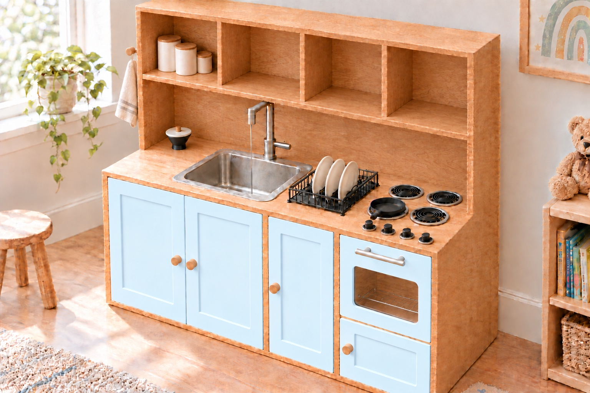
A three-bay hutch for a two-year-old, in real oak plywood with open shelves up top and pale blue doors below, with a sink that really runs and a port she refills herself.
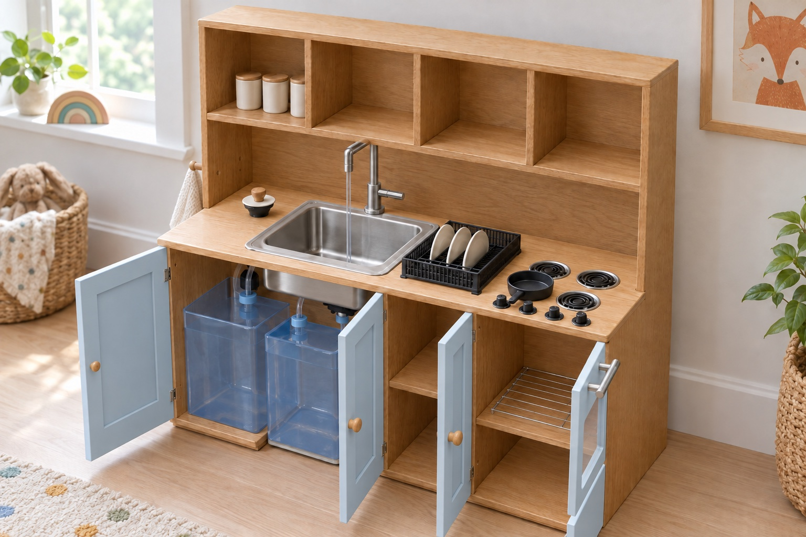
| Bought | Item | Where | Each | Qty | Subtotal |
|---|---|---|---|---|---|
| Wood and finish | 351.83 | ||||
| ✓ | PureBond red oak plywood 3/4 in × 4 ft × 8 ftColumbia Forest Products 165956. Three sheets ripped in half make the six 48 × 48 panels on hand; the cut sheets use five. Measured 0.715 to 0.725 in; dados cut 0.735. Budget price, not read from the page. | Home Depot | 95.00 | 3 | 285.00 |
| ✓ | Red oak iron-on edge banding, 13/16 in × 50 ftPOWERTEC 72371, pre-glued (the Edge Supply roll went out of stock). About 44 ft used: every front edge of the carcass, the open shelves included, and all four edges of five doors. | Amazon | 20.00 | 1 | 20.00 |
| ✓ | Titebond III wood glue, 8 ozTitebond 1413. Waterproof. Every dado gets it. | Home Depot | 7.49 | 1 | 7.49 |
| ✓ | BEHR Premium cabinet & trim enamel, semi-gloss, 1 qt, light blueThe five doors, in a very pale powder blue: pick a light blue at the paint desk and ask for it three steps lighter. Budget price. | Home Depot | 23.38 | 1 | 23.38 |
| ✓ | KILZ 2 primer, 1 qtKILZ 20902. One coat on the five doors before the enamel; plywood drinks paint. | Home Depot | 12.98 | 1 | 12.98 |
| ✓ | 1/2 in × 36 in oak dowelTwo 3 in pegs cut from it, glued through the left side at her shoulder height: apron and hand towel. Budget price. | Home Depot | 2.98 | 1 | 2.98 |
| Fasteners | 30.82 | ||||
| ✓ | #8 × 1-1/4 in flat head wood screws, 100Everbilt 801832, zinc. About 89 used: three screws through every dado joint on top of the glue, plus the back, shelves and one through each burner. Countersink them all. | Home Depot | 7.97 | 1 | 7.97 |
| ✓ | #6 × 1/2 in flat head wood screws, 100Rok Hardware, zinc. Four hold the oven window clips, four the pump's feet, four the wiring box to the back panel and four its lid. | Amazon | 7.09 | 1 | 7.09 |
| ✓ | 3/8 in face-grain oak plugs, 100WidgetCo. Flat plugs for the countersunk heads on the two outside faces and the top, about 36 used. | Amazon | 15.76 | 1 | 15.76 |
| Doors and hardware | 23.65 | ||||
| ✓ | 2-1/2 in stainless butt hinges, 10-packZorveiio, satin nickel, 66 × 38 mm, 1.4 mm leaves, screws included. Two on each of the five doors. The cabinet leaf sits flush in a 1.4 mm CNC recess, so the door leaf alone takes up the 3/32 in reveal. | Amazon | 7.49 | 1 | 7.49 |
| ✓ | 1.3 in unfinished wood knobs, 20-packCangder mushroom knobs, solid wood, M4 × 30 mm screws included. Four on the doors, each on a printed bushing in a 1/2 in CNC hole and centred on the stile, clear of the Shaker panel; one on the fill-port lid. Fifteen spare. The stove knobs are printed. | Amazon | 9.99 | 1 | 9.99 |
| ✓ | 6 in stainless bar pull, 96 mm centresPandora solid stainless. The oven door handle, above the window; the CNC dimples its two screw holes on the inside face. | Amazon | 6.17 | 1 | 6.17 |
| Sink and faucet | 155.72 | ||||
| ✓ | Elkay Dayton 15 in drop-in bar sinkD115151. 15 × 15 rim, 12 × 10 × 5 bowl, 2 in drain, one 1 1/2 in faucet hole, 14 3/8 in cutout, clips included. The 5 in bowl leaves room for a 14 in jug under it. It sits 3/4 in back of centre in its bay so the drain lands over the dirty jug's neck. | Amazon | 74.99 | 1 | 74.99 |
| ✓ | ARCORA single-handle bar faucet, brushed nickel, with supply lines9.3 in tall under 10 1/2 in of headroom, spout 7 in up, 5 in reach, 1.26 to 1.5 in hole. Hoses end in 1/2-14 NPSM nuts for the adapters below; if yours are 3/8 compression, use 3/8 compression × 3/8 barb fittings (B07DJ451LM) instead. | Amazon | 43.19 | 1 | 43.19 |
| ✓ | Niagara Tri-Max 0.5 / 1.0 / 1.5 GPM aeratorNiagara Conservation N3610CH, dual thread, three click-stop flows. Run it on 0.5 so the sink never fills faster than it drains. Play water, not drinking water. | Amazon | 8.50 | 1 | 8.50 |
| ✓ | 2 in bar sink drain with basket strainerPhivan, stainless, fits the Elkay's 2 in drain. Hangs about 1 1/2 in under the bowl, straight over the funnel in the dirty jug. Keeney K5421 (B002JFUOBY) is the fallback. | Amazon | 9.99 | 1 | 9.99 |
| ✓ | 1-1/2 in × 6 in sink tailpiecePlumb Pak PP905W. Already in the cart; cut it to a 1 in stub on the strainer to aim the stream into the funnel, or leave it out. | Amazon | 5.99 | 1 | 5.99 |
| ✓ | Plumber's putty, 9 ozOatey 31177. Under the strainer flange. | Amazon | 4.54 | 1 | 4.54 |
| ✓ | GE Advanced Silicone 2 kitchen & bath sealant, clear, 2.8 ozBead under the sink rim and around the cutout edge; a thin bead round the acrylic in its pocket. | Amazon | 8.52 | 1 | 8.52 |
| Water | 101.73 | ||||
| ✓ | Two 5 gal square water jugs, 10 × 10 × 14 inYours, 2 1/4 in opening at the back edge of the top, both standing neck to the back. Clean on the left: pickup foot inside on its tube through a drilled cap, a side-mount float low on its back wall. Dirty on the right, on the floor in the notch, printed funnel in a 1 1/2 in hole in its cap. Already yours; no price to count. | On hand | — | 2 | — |
| ✓ | ECO-WORTHY 12 V demand pump, 3.5 GPM, 45 psi, with strainer and fittingsModel T33-12V. Its pressure switch runs it when the faucet opens and stops it when it closes; self-priming, can run dry. Use its own strainer and 1/2 in straight-thread barbs, not NPT. Screwed to the back panel behind the jugs; switch turned toward 25 psi. | Amazon | 44.99 | 1 | 44.99 |
| ✓ | 1/2 in ID × 5/8 in OD clear vinyl tubing, 10 ftPickup line from the foot in the clean jug up through its cap to the pump's strainer and inlet; pump outlet to the reducer; and 9 in from the fill port down to the cap. About 7 ft used. | Amazon | 8.99 | 1 | 8.99 |
| ✓ | 1/2 in to 3/8 in stainless barb reducer, 2-packBeduan 304 stainless: 1/2 in tube from the pump on one end, 3/8 in tube to the tee on the other, a clamp on each. One spare. | Amazon | 10.99 | 1 | 10.99 |
| ✓ | 3/8 in ID × 1/2 in OD clear vinyl tubing, 10 ftEastman 98620, FDA-compliant PVC. About 3 ft used: reducer to tee to the two faucet adapters. | Amazon | 7.88 | 1 | 7.88 |
| ✓ | 3/8 in stainless barb teeMetaland 3/8 × 3/8 × 3/8. Splits the pump's outlet to both faucet supply lines so every handle position gives water. | Amazon | 8.99 | 1 | 8.99 |
| ✓ | 3/8 in barb × 1/2 in NPT male nylon adapter, 6-packJoyTube. Screws straight into the faucet's 1/2-14 NPSM supply nuts (the hose's own cone washer seals it), 3/8 in tube on the barb. One per line, four spare. | Amazon | 7.99 | 1 | 7.99 |
| ✓ | SAE 6 stainless hose clamps (3/8 to 7/8 in), 10-packCovers both tube sizes; one on every barb, nine used, one spare. | Amazon | 11.90 | 1 | 11.90 |
| Electrical | 71.12 | ||||
| ✓ | 12 V 10 A power supply, 120 W, 5.5 × 2.1 mm barrelDesktop supply with a barrel-to-screw-terminal adapter in the box. The pump can pull 6 A. Its plug is the adult off switch. | Amazon | 20.98 | 1 | 20.98 |
| ✓ | Side-mount float switch, M16, 2-packmxuteuk DPL-1-BK, polypropylene, both used. One through a 5/8 in hole low on the clean jug's back wall, 2 in up: it opens when the water drops below it and the pump stops before it can run dry. The other high on the dirty jug's back wall, 12 in up, set the other way: it opens when the dirty water lifts it, so the sink cannot overfill the jug. In series on the relay coil; rated 0.5 A, so they never carry the pump. | Amazon | 5.99 | 1 | 5.99 |
| ✓ | 12 V 30 A automotive relay with socket, 5-packESUPPORT 5-pin. Both float switches in series on the coil (85/86), supply positive to 30, pump positive off 87: clean jug empty or dirty jug full, no coil, no pump. Lies in the printed wiring box, held by two zip ties. Four spare. | Amazon | 13.59 | 1 | 13.59 |
| ✓ | 2-pin waterproof pigtail plugs, 5 pairsMUYI, pre-wired, 4 in of 18 AWG on each half: no crimping. One pair on each float lead at the top of its jug's back wall, joined to the float wires and to the run to the wiring box with in-line lever connectors. Unplug and the jug walks away. Three pairs spare. | Amazon | 7.59 | 1 | 7.59 |
| ✓ | 18 AWG two-conductor red/black wire, 25 ftCopper-clad aluminium, fine at 12 V and these lengths. Three runs into the wiring box: the supply pair from the barrel adapter through the cord hole (2 ft), and one pair to each jug's plug (clean about 3 ft, dirty about 2 ft). Red is the float's feed, black its return. | Amazon | 7.99 | 1 | 7.99 |
| ✓ | Lever wire connectors, 32-piece kitXALXMAW: 18 one-in-one-out, 6 one-in-two-out, 4, 2 and 2 of the bigger splitters; 24–12 AWG. 14 used: three 1-in-2-out and three 1-in-1-out in the wiring box's labelled slots, and four 1-in-1-out at each jug where the float's leads meet its plug and the plug meets the run. Strip, lift the lever, push in, close it: no crimping. | Amazon | 14.98 | 1 | 14.98 |
| Oven, stove and dishes | 52.18 | ||||
| ✓ | 8 × 10 in clear cast acrylic, 1/8 in, 2-packKAITELA, cast. It drops into the 10 3/16 × 8 3/16 in pocket on the oven door's inside face as it comes, film off, nothing to cut. One spare sheet. | Amazon | 9.99 | 1 | 9.99 |
| ✓ | Stainless cooling rack, 9.7 × 7.3 in, 2-packP&P CHEF. One is the oven rack, on the oak oven floor behind the window. The other is a spare or a second shelf. | Amazon | 8.29 | 1 | 8.29 |
| ✓ | Small dish drying rack, 7.7 in wideRubber-footed slim rack for the drying bay counter, long axis front to back; the bay is 8 1/2 in wide, so anything under 8 in across works. | Amazon | 21.69 | 1 | 21.69 |
| ✓ | #8-32 × 2 in stainless machine screws, 30Twidec, pan head. Four hold the stove knobs: up from under the counter, through a printed washer and the knob's boss, into the nut captured in the knob. | Amazon | 6.99 | 1 | 6.99 |
| ✓ | #8-32 machine screw nuts, 100Hillman, zinc. One drops into the hex pocket in each stove knob before its boss is glued in. | Amazon | 5.22 | 1 | 5.22 |
| Safety | 11.58 | ||||
| ✓ | Furniture anti-tip strap kitQuakeHOLD! 4160, two 15 in nylon straps. A 45 in hutch with a toddler on the oven door is a ladder. Strap the back to a stud. | Amazon | 11.58 | 1 | 11.58 |
| Tax | 25.94 | ||||
| ✓ | Sales tax on the two Amazon orders, less a $1.05 coupon$17.93 + $9.06 tax, −$1.05 coupon: the Amazon lines above plus this one come to the $442.70 charged. Home Depot prices are before tax. | Amazon | 25.94 | 1 | 25.94 |
| Total | 824.57 | ||||
| # | Feature (layer) | Toolpath | Depth | Per pass | Why this, why now |
|---|---|---|---|---|---|
| 1 | Dados and rabbets blue | Pocket, inside the line | 1/4 in | 1/8 in, 2 passes | First, while the sheet is one piece. The downcut flutes press the veneer down instead of tearing it up. Test one on an offcut. |
| 2 | Hinge recesses, pull dimples cyan | 0.055 in (1.4 mm) | 1 pass | One hinge leaf deep. Measure a real hinge first: the hinge is the boss, the drawing is a suggestion. | |
| 3 | Shaker panels, window pocket purple | 1/8 in | 2 passes | Four door panels and the acrylic's seat on the oven door. Shallow and on show: don't get greedy. | |
| 4 | Holes magenta | Contour inside the line | through | 1/8 in | Every hole is 1/2 in: the 1/4 in bit circles inside it, so no tool change and no excuses. |
| 5 | Inside profiles green | Contour inside the line | through | 1/8 in | Sink cutout, fill-port hole, oven window. Before the outsides, so each part still holds on while its middle leaves. |
| 6 | Outside profiles black | Contour outside the line, tabs | through | 1/8 in | Tabs on the big panels or they go for a walk. The sides are L-shaped; Side R is Side L's mirror, on purpose. |
| 7 | Break lines red | Contour on the line | through | 1/8 in | Optional. Dead last if you cut them, a screw in each offcut; skip them and saw the parts out of the skeleton. |
Through = 0.785 in, 0.060 in into the spoilboard; tabs 0.186 in tall from the bottom of the cut, so 1/8 in of wood. The cnc/ Carbide Create files have it all set. Before every sheet, check Z0 with paper: a wrong touch-plate thickness deepens every cut.
| Part | Qty | Length (grain) | Width | Notes | Sheet |
|---|---|---|---|---|---|
| Side | 2 | 4545.000 · 1143.0 mm | 1818.000 · 457.2 mm | Hutch profile: 18 in deep to the counter, 8 1/2 in above it. Rabbets top and bottom, dados for the counter and upper shelf. Right: oven shelf dado. Hinge recesses at the lower front edge. Left: two 1/2 in peg holes. Grain vertical. | S1 |
| Upper shelf | 1 | 44 15/1644.940 · 1141.5 mm | 7 25/327.780 · 197.6 mm | Floor of the four upper cupboards; three through dados on its top face for the upper dividers. | S5 |
| Upper divider | 3 | 10 17/3210.530 · 267.5 mm | 7 25/327.780 · 197.6 mm | 1/4 in into the upper shelf and the top, plain: four equal open compartments. All three in a row on S4. | S4 |
| Back | 1 | 44 9/3244.280 · 1124.7 mm | 44 7/1644.440 · 1128.8 mm | Fills S2. Sits on the bottom, runs to the top, screwed through the sides. 1/2 in cord hole behind the pump. | S2 |
| Counter | 1 | 44 15/1644.940 · 1141.5 mm | 17 9/3217.280 · 438.9 mm | Cut FACE DOWN: through dados for the dividers on the underside. Sink cutout, 1 1/2 in fill port, knob holes. | S3 |
| Bottom | 1 | 44 15/1644.940 · 1141.5 mm | 17 9/3217.280 · 438.9 mm | On the floor. Through dados on the top face; a 10 1/2 in notch from the front edge where the dirty jug stands on the floor and slides out. | S3 |
| Top | 1 | 44 15/1644.940 · 1141.5 mm | 7 25/327.780 · 197.6 mm | Cut FACE DOWN: three upper divider dados on the underside. Sits in the sides' top rabbets. | S3 |
| Divider | 2 | 22 1/1622.060 · 560.3 mm | 17 9/3217.280 · 438.9 mm | Full depth, 1/4 in into the bottom and the counter. A: hinge recesses on its left face. B: drying shelf dado and hinge recesses on its left face. | S4 |
| Drying shelf | 1 | 8 3/48.750 · 222.2 mm | 16 9/3216.280 · 413.5 mm | 1/4 in into divider B, screwed to divider A. Front corners rounded. | S4 |
| Oven floor | 1 | 11 3/411.750 · 298.4 mm | 16 9/3216.280 · 413.5 mm | 1/4 in into the right side, screwed to divider B. Oven above, warming drawer below. | S4 |
| Sink door | 2 | 21 3/821.373 · 542.9 mm | 11 3/811.359 · 288.5 mm | Two inset doors under the sink, 3/32 in reveal, grain vertical. Shaker panel: cut FRONT FACE UP. Light blue. | S5 |
| Drying door | 1 | 21 3/821.373 · 542.9 mm | 8 5/168.312 · 211.1 mm | Inset door on the drying cupboard, hinged on divider B. Shaker panel: cut FRONT FACE UP. Light blue. | S5 |
| Oven door | 1 | 12 11/3212.343 · 313.5 mm | 11 5/1611.312 · 287.3 mm | Cut INSIDE FACE UP: window opening, 1/8 in pocket for the stock 8 x 10 acrylic, two dimples for the bar pull. Hinged on the right side. Light blue. | S5 |
| Warming door | 1 | 8 1/88.122 · 206.3 mm | 11 5/1611.312 · 287.3 mm | Below the oven, hinged on the right side. Shaker panel: cut FRONT FACE UP. Light blue. | S5 |
| Whole kitchen | 19 | 5 sheets of 48 × 48 |
Four 48 × 48 panels (two 4 × 8 sheets ripped in half), drawn to scale. Parts sit 1/2 in apart inside a 1 in hold-down border; the grey band is where your screws go. Red dashed lines are the break cuts: run them last, with a screw in each leftover, so the offcuts come away as rectangles. Blue outlines are dado pockets, 1/4 in deep, and the small blue rectangles at the front edges are the 1.4 mm hinge recesses; the green shape is the sink cutout; the small circles are 1/2 in holes the bit circles out. Parts marked FACE DOWN have their pockets on the underside; the dividers lie LEFT face up.
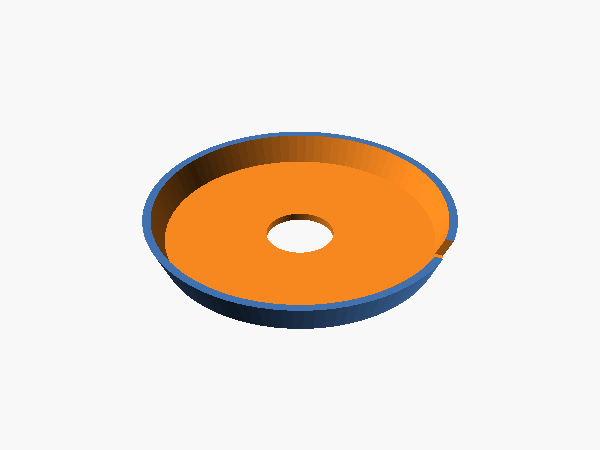
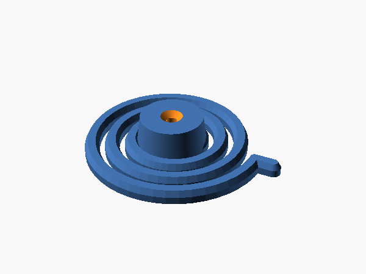
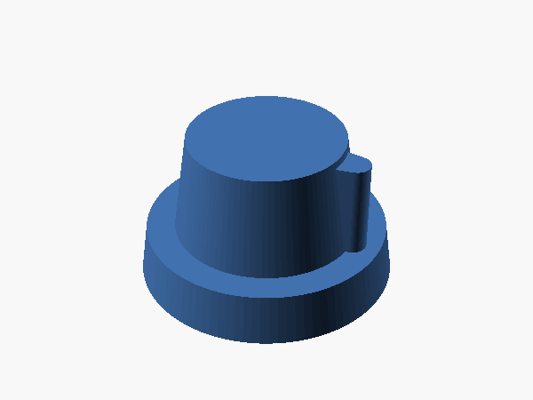
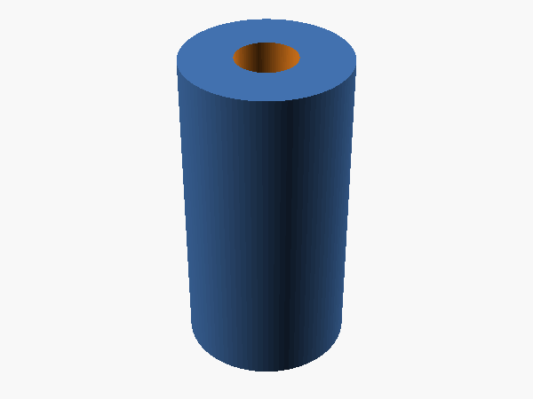
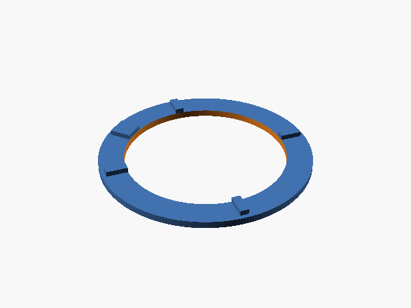
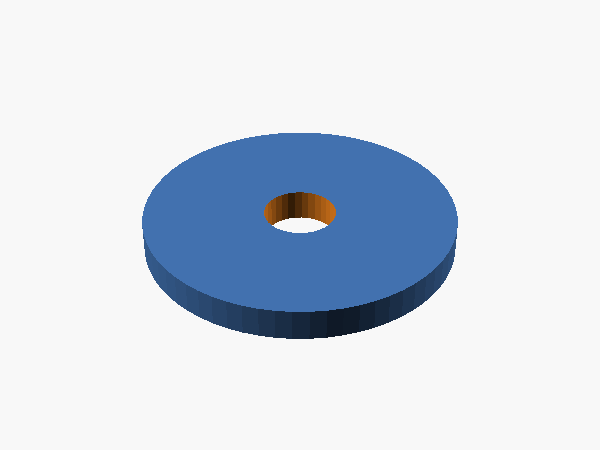
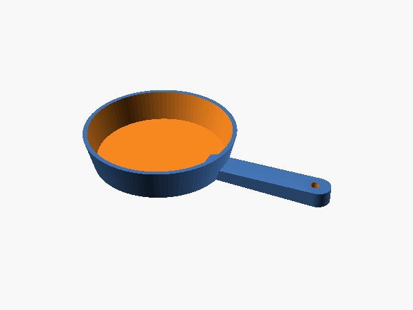
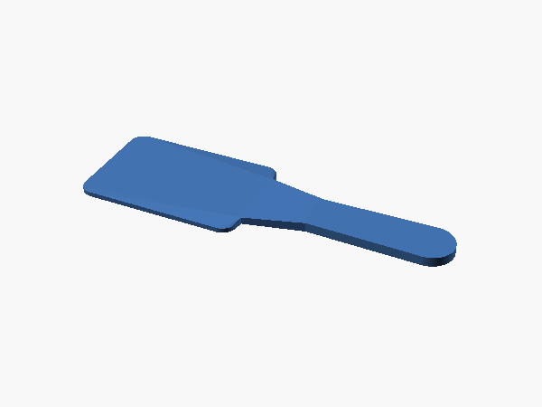
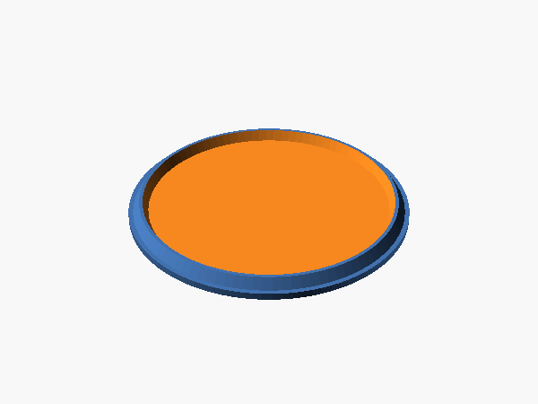
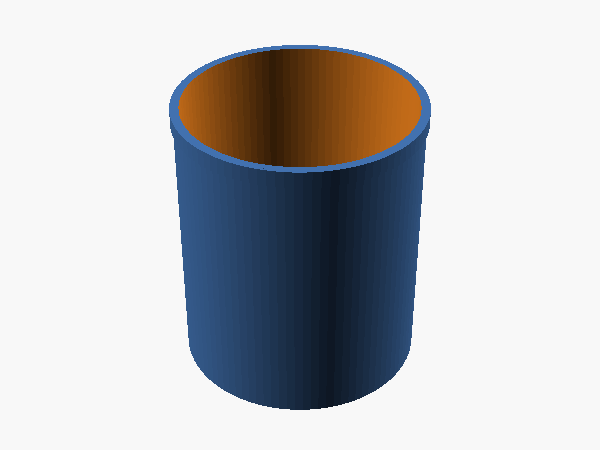
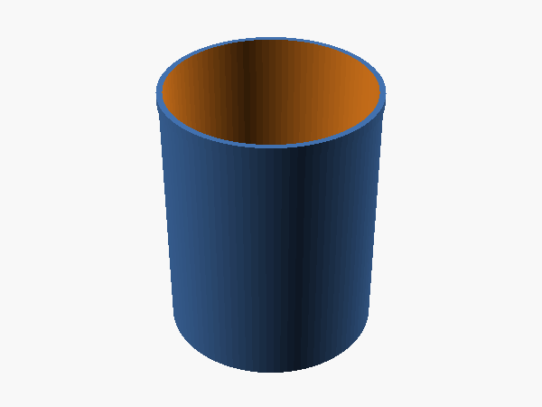
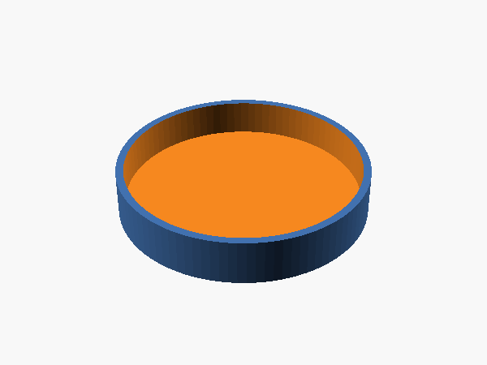
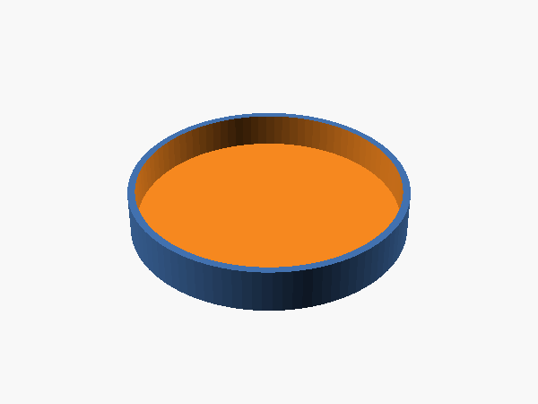
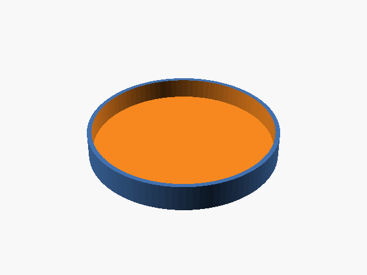
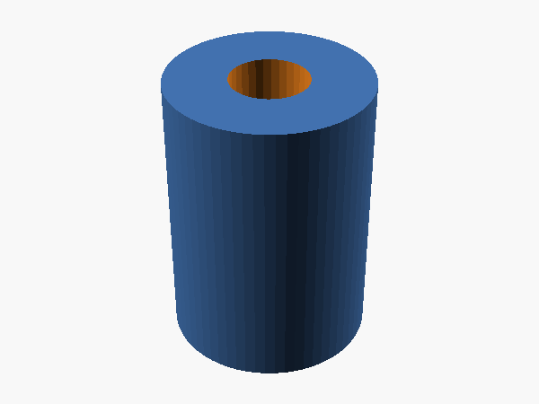
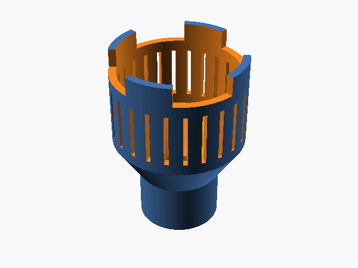
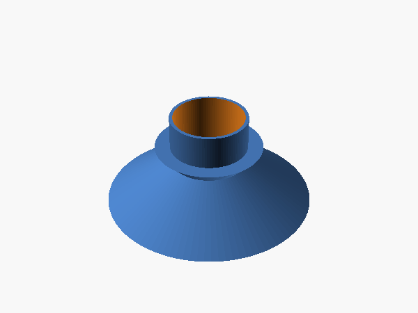
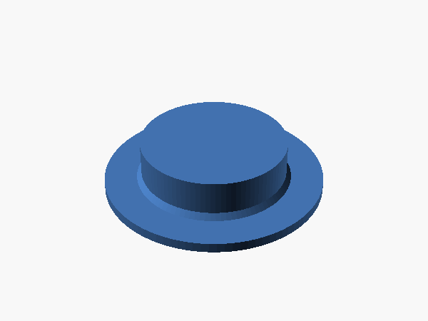
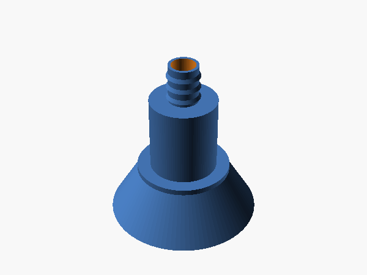
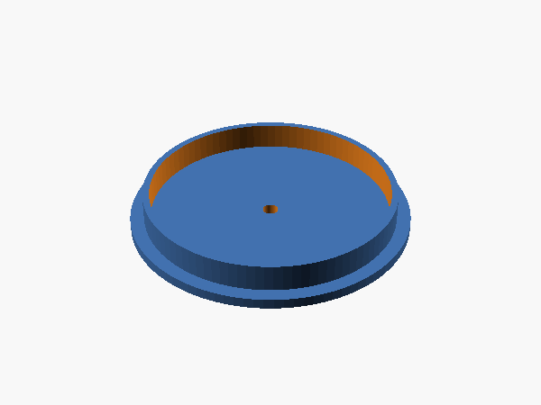
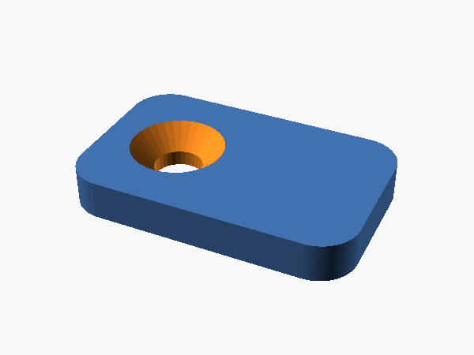
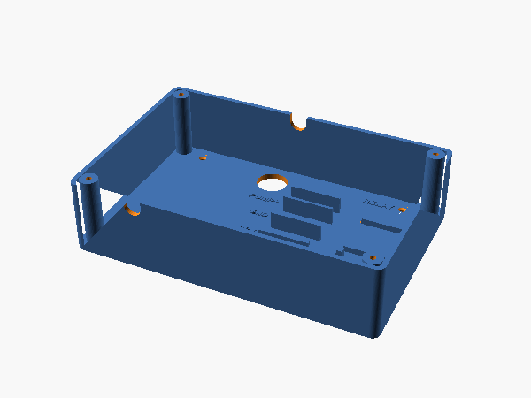
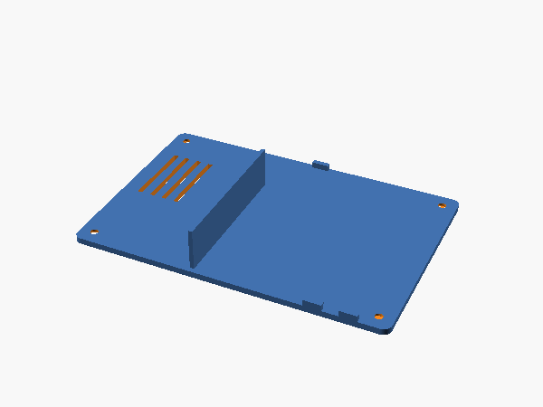
Dado joinery, belt and braces: every panel edge sits 1/4 in into a pocket in its neighbour, glued with Titebond III, and then screwed through from the outside, three #8 × 1 1/4 in screws per joint, countersunk. The dado locates, the glue holds, the screws clamp it while the glue sets and keep it square when a toddler hangs off a door. Heads on the two outside faces and the top get oak plugs.
| Joint | How | Screws | Why |
|---|---|---|---|
| Bottom, counter, upper shelf into the sides | Bottom in a rabbet at the floor edge, counter in a full-depth dado, upper shelf in a dado across the upper portion; glue, 3 screws through each side into each panel edge, plugged | 18 | The panels are 44 15/16 in long: 1/4 in into each side. Self-squaring. |
| Top into the sides | Rabbet along the top of each side's upper portion, glue, 3 screws down through the top into each side, plugged | 6 | Flush top, no end grain of the sides showing above it. |
| Dividers A and B | Through dados in the bottom (top face) and counter (underside), glue; 3 screws up through the bottom into each, 2 toe-screws from inside the drying bay into the counter | 10 | They are 22 1/16 in: the opening plus 1/4 in each end, full depth. Nothing shows on the counter. |
| Upper dividers (3) | Through dados in the upper shelf and the top, glue; 3 screws up through the upper shelf and 3 down through the top into each, plugged | 18 | Four equal open compartments, her dishes at eye level. |
| Drying shelf | Stopped dado in divider B's left face, glue, 2 screws through B; left end butts divider A, 2 screws through A from the sink bay | 4 | A's left face has the sink door's hinge recesses, so its right face stays plain and the dado went to B. |
| Oven floor | Stopped dado in the right side, glue, 3 screws through the side, plugged; left end butts divider B, 2 screws through B from the drying bay | 5 | Heads inside the drying cupboard, behind its door. |
| Back | Butt joint between the sides, on the bottom panel, up to the top; glue, 6 screws through each side into its edges, plugged, and 4 each into the bottom, counter and upper shelf edges from behind | 24 | The back is the shear panel; the strap goes through it into the wall. |
| Doors (5) | Two 2 1/2 in butt hinges each, cabinet leaves flush in the 1.4 mm CNC recesses, door leaves on the door edges; stop strips glued behind | 20 (supplied) | Inset, 3/32 in reveal. Sink, drying and warming doors are Shaker-panelled, the oven door flat. Wood knobs on the stiles, 7/8 in from the free edges, on printed bushings; the oven door gets the bar pull. |
| Fill port, pegs | Printed funnel into the counter hole on a bead of silicone under its flange; 1/2 in tube from its barb to the clean jug's cap; two 3 in oak pegs glued through the left side, flush inside | 0 | She refills the kitchen herself; apron and towel hang where she can reach them. |
| Oven window | Acrylic in the pocket on the door's inside face on a thin bead of clear silicone, four printed clips over its corners, #6 × 1/2 screws | 4 (#6) | From the front the acrylic bears on the pocket shoulder, so it cannot be pushed in. |
| Pump and wiring box | Pump's rubber feet screwed to the back panel behind the jugs, #6 × 1/2, long axis across; printed wiring box beside it over the cord hole, four #6 × 1/2 through its floor, four through its lid | 12 (#6) | Off the floor, out of the way of the jugs, barbs pointing at the jug and the faucet. Every wire joint is inside the box. |
| Burners, stove knobs | Drip pan down, coil in, one #8 × 1 1/4 in screw through the coil's centre cap into the counter (7/64 pilot); nut in the knob, boss glued in, boss through the 1/2 in hole, bezel glued round it, 8-32 screw and washer from below, snug not tight | 4 | Four knobs that turn and four burners that stay put. |
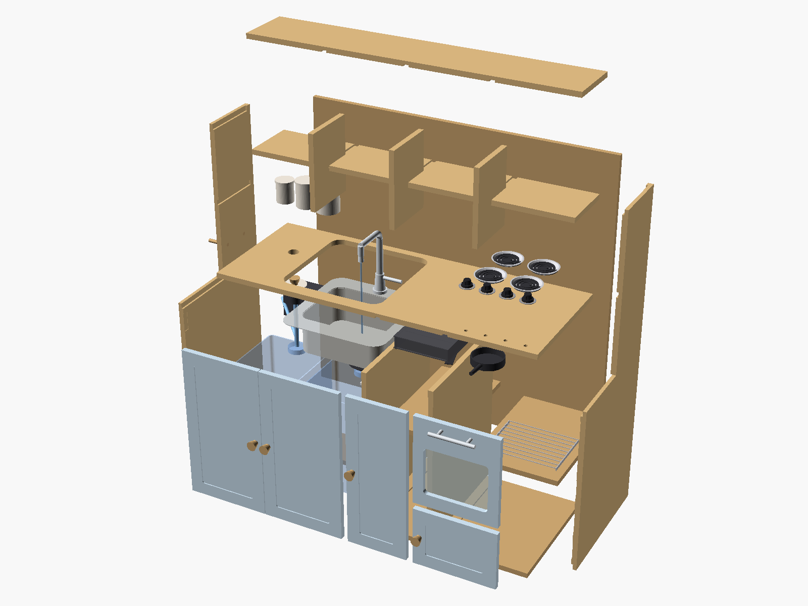
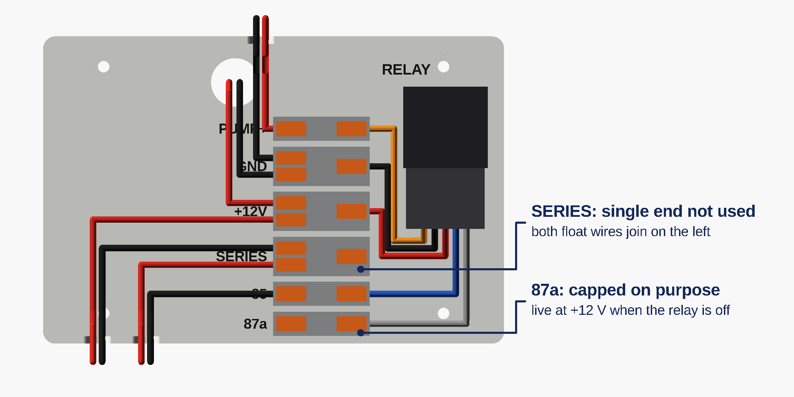
Lay the left side flat, pockets up. Stand the bottom in its rabbet, the counter in its dado, the upper shelf in the dado across the upper portion, drop the top into its rabbet, then lower the right side on. Everything should seat by hand. Mark FRONT and INSIDE on every panel in pencil now; it is the last time you will see all the edges.
Dividers A and B into the bottom's through dados, hinge recesses on both facing left, then the counter over them so its underside dados swallow their tops. Drying shelf into divider B's dado, oven floor into the right side's. The three upper dividers into the upper shelf, top over them. Note where the shelf screws go: through A into the drying shelf, through B into the oven floor.
Take it apart. Glue in the left side's bottom rabbet and counter dado, the bottom's two dados, the counter's two. Rebuild in the same order with the left side flat, slide the shelves in and screw their free ends (2 screws each, countersunk, heads inside the sink bay and the drying bay), lower the right side on, clamp across the width at every panel, check the diagonals. Now the screws: pilot 7/64 in and countersink (on the two outside faces and the top, counterbore 3/8 in and 1/4 in deep so the oak plugs seat), three through each side into each panel edge, three up through the bottom into each divider, two toe-screws from the drying bay up into the counter. Let it sit an hour.
Glue in the sides' upper-shelf dados and top rabbets, the upper shelf's two dados and the top's. Upper shelf in, the three upper dividers in, top on. Three screws through each side into the upper shelf, three down through the top into each side and into each upper divider, three up through the upper shelf into each upper divider.
Lay the box on its face, back on: it sits on the bottom panel and runs to the top, cord hole low in the sink bay. Six screws through each side into its edges and four through it into each of the bottom, counter and upper shelf edges.
Glue a 3/8 in oak plug into every counterbore on the two outside faces and the top, grain lined up, trim flush with a flush-cut saw and a block. Then the edge banding: iron the oak banding onto every plywood edge that shows. The carcass first, as one continuous run per edge: the front edges of both sides including the step, the front edges of the top, upper shelf, counter and bottom between them, the front edges of the four dividers and both mid shelves. Then the doors, all four edges of each, before they are hung and before they are painted; the 3/32 in reveal already allows for the banding's thickness. Trim with a banding trimmer or a sharp block plane, break the corners with a sanding block.
Seat each hinge's cabinet leaf in its recess and drill through the hinge's holes; screw it. Hold the door in its opening on 3/32 in shims, mark the door-edge leaf, drill through the hinge again, screw. Glue a 3/4 × 1 in offcut strip behind each door's top edge as a stop. Press a bushing into each knob hole, wood knobs on. The oven door: drill its two dimples 5/32 in through, bar pull on from the inside. Stove knobs: drop an 8-32 nut into the hex pocket in each knob's face, glue the boss over it, boss through the counter hole, bezel glued round it, 2 in screw and washer up from underneath into the nut, snug enough to turn with a little drag.
Everything in the Finish section happens now: poly on the carcass, primer and enamel on the doors, with the sink, faucet, pump and jugs still in their boxes. Then the window: peel the acrylic, a thin bead of clear silicone in the pocket, acrylic in, four printed clips over its corners with #6 × 1/2 screws.
The pump goes on the back panel in the sink bay, long axis across, feet to the back, 16 1/2 in up, so it sits behind the jugs' shoulders: four #6 × 1/2 through its rubber feet. The printed wiring box goes right of it, and the cord hole places it: hold the box's big floor hole over the cord hole, RELAY label top right, two notches along the bottom edge and one in the top edge, edges square to the cabinet, and drive four #6 × 1/2 through its countersunk floor holes. It sits 1 19/32 in off the back, behind the jugs, clear of the bowl and the faucet hoses. Lid off until the wiring is done.
Two sides, and nothing crosses: the relay stands on the right and its five leads go left into the connectors' single-wire ends; every wire from outside comes in on the left and lands on their output ends. One lever connector per labelled slot, lying on its side, output end toward the label: 1-in-2-out in GND, +12V and SERIES, 1-in-1-out in PUMP+, 85 and 87a. Strip 11 mm, lift the lever, push the wire home, close it; wire each connector in your hand, then press it into its slot. Relay: into its socket, stood on the two feet at the bottom of its bay with the leads coming out between them, one small zip tie through each saddle's tunnel and round it. Relay leads, by the numbers moulded on the socket, not the colours, into the single ends: 87 to PUMP+, 86 to GND, 30 to +12V, 85 to 85, 87a alone in 87a as a cap. SERIES's single end stays empty. Pump: its pair in through the top notch beside the column, red to PUMP+, black to GND's upper output. Supply: 2 ft of the red/black wire, one end into the barrel adapter's screw terminals (red to +, black to −), the other pushed in from behind through the cord hole: black to GND's lower output, red to +12V's upper. Float runs: one length of red/black to each jug's plug, about 3 ft for the clean jug and 2 ft for the dirty. Clean, through the left bottom notch: red to +12V's lower output, black to SERIES's upper. Dirty, through the right bottom notch: red to SERIES's lower output, black to 85. The current goes +12V, clean float, SERIES, dirty float, 85, through the coil, 86, GND: both floats closed or nothing. At the far end each run meets the box-side half of its jug's 2-pin plug with two 1-in-1-out connectors. Test before the lid: plug both jugs in, water in the clean jug, plug the brick in: the relay clicks. Unplug either jug's plug: it clicks off. Lid on with four #6 × 1/2 in its corners; its tongues close the notches over the wires. The brick's plug at the wall is the off switch.
Both jugs stand neck to the back, and each gets one of the two side-mount floats through a 5/8 in hole in its back wall. To fit one: lower the switch into the jug through the neck on its lead, fish the lead out through the hole from inside with a bent wire, pull the thread through, gasket on the inside under the flange, nut on the outside. (If yours has its flange at the cable end instead, it mounts from outside and the nut has to go on from inside; the dirty jug's hole is reachable through the neck, the clean jug's is not, so check before drilling.) Clean jug: hole 2 in up; set the float so the switch is closed with the float up and opens when the water drops away (flip the float if not; a multimeter settles it). It stops the pump with about 0.9 gal left. Drill its spare cap 5/8 in for the pickup tube and a second 5/8 in for the fill tube; push the printed foot onto a 30 in piece of 1/2 in tube, through the cap, foot to the floor. Dirty jug: hole 12 in up; set the float so the switch is closed with the float down and opens when water lifts it, about 5 gal: the sink stops before the jug can overflow. Drill its cap 1 1/2 in (1 5/8 or 1 3/4 in also fits the funnel), printed funnel in. Both: a 2-pin pigtail plug on each float's lead at the top of the jug's back wall, the float's two leads joined to one half with two 1-in-1-out lever connectors; the other half takes that jug's run from the wiring box (step 10) the same way. A foot of slack. Dirty jug on the floor in the notch in the bottom panel with the funnel under the strainer; 2 ft of slack in the pickup tube so the clean jug can come forward to the doors. There is 1 3/32 in between the strainer and the funnel rim; if your strainer hangs lower, trim the funnel's mouth.
Silicone bead on the counter around the cutout, drop the sink in, tighten the clips, wipe the squeeze-out. Faucet in the rear-deck hole per its sheet, supply hoses hanging below; swap its aerator for the Tri-Max, set to 0.5 GPM. Basket strainer into the drain on plumber's putty; the tailpiece, cut to a 1 in stub, points it at the funnel.
Pickup line from the clean jug's cap to the strainer on the pump's inlet, clamp. From the pump's outlet barb a short 1/2 in tube to the big end of the stainless barb reducer, clamp, then 3/8 in tube from its small end to the tee, clamp both. From the tee's two legs, a short 3/8 tube each onto a 1/2 NPT × 3/8 barb adapter, clamp, and screw each adapter into one of the faucet's supply nuts; the washer inside the nut seals it. Two gallons in the clean jug, plug the brick in, open the faucet: the pump primes in a few seconds and the tap runs; close it and the pump stops. Lift the foot out of the water and the pump stops too.
Both sink doors open. Dirty jug: unplug its float lead, lift the funnel out of its cap, push the printed plug into the hole, slide the jug straight out on the floor through the notch, carry it to a drain, pour, plug out, funnel back in, slide it home under the strainer. Clean jug: day to day she refills it herself through the port beside the sink, a small pitcher at a time; the fill tube just drops into the cap's second hole. To take the jug out: slide it forward to the doors, unplug its float lead, lift the fill tube out, unscrew the drilled cap and lift cap, tube and foot out together (set the foot in a cup, it drips a spoonful), put the jug's own cap on and carry it. The tube stays connected to the pump the whole time.
Silicone under the funnel's flange, drop it into the counter hole, tube from its barb down into the cap's third hole, lid on with a spare wood knob screwed through it from the ring side. Cut two 3 in pegs from the oak dowel, glue them through the left side's two holes, flush on the inside, 2 1/4 in proud outside, and ease their ends with sandpaper.
Anti-tip strap from the back of the top panel to a wall stud. Then let the kid loose.
Two finishes: clear polyurethane on everything oak, the open shelves and the oven included, and pale blue cabinet enamel on the five doors. The enemy is end grain and the cutout edge, which drink water. Seal them as if they were the top.
| What | When | Why then |
|---|---|---|
| Sand 150 then 180, ease the banded edges with a sanding block (no round-over bit: it would cut through the banding) | After plugs and banding, before any finish | An eased edge holds finish; a sharp one wears through to bare wood under small hands. |
| Flood coat the sink cutout edge, the counter underside around the cutout, the jug hole, all end grain | Poly coat 1, thinned 10 percent | Thinned poly soaks into end grain instead of sitting on it. |
| Three coats of poly on every oak surface, 220 scuff between coats; two more on the counter top, the cutout and the whole inside of the sink bay, floor included | Coats 1 to 5, 4 to 24 h apart per the can | Three is the minimum for a wipe-down surface; the sink bay lives under two jugs. |
| Doors: one coat of primer, two of enamel, both faces and all four edges, 220 scuff between | Off the hinges, flat on blocks, after the banding | Flat doors are easy doors; a brush mark on a flat slab shows. Thin coats, or a foam roller. |
| Cure | 7 days before the first water, 7 before the doors are hung and handled | Dry to the touch is not cured; water on a soft film leaves white rings, fingers on soft enamel leave prints. |
| Silicone under the sink rim and around the cutout edge; a thin bead round the acrylic | Installation day | Belt and braces: the poly seals the wood, the silicone keeps the water from reaching it. |
150 then 180 on every face, plugs flush, banding edges eased with a block, a few strokes at 45 degrees. Vacuum, then wipe with a tack cloth.
Brush thinned poly into the sink cutout, the jug hole, every end-grain edge, the underside of the counter and the inside of the sink bay. Let it soak, wipe the drips, let it dry.
Three thin coats over all the oak, scuffed with 220 between. Then two more on the counter, cutout, drying bay and the sink bay. The five wood knobs and the two pegs get the same three coats before they go on; the printed parts get nothing.
Off the hinges, flat on blocks: primer, 220, enamel, 220, enamel. All five doors pastel blue; edges too. On the Shaker doors, brush the recessed panel and its corners first, then roll the frame. A foam roller leaves no brush marks on a flat door. Keep the hinge recesses on the carcass clear of poly build-up.
Only after the full cure: window, silicone, sink, faucet, pump, jugs, tube. Tip the dirty jug out after play and leave the sink doors open to dry; the poly will outlast the toddler.
printed.scad, millimetres, STLs in stl/. PLA or ASA, 0.2 mm layers, 3 walls, 15 percent infill. Every part prints in the orientation it is modelled in, with no supports. The dish rack is bought now, not printed. Tick Printed when it is off the bed and cleaned up, Fitted when it is on the kitchen.
| Printed | Fitted | Part | Qty | File | Notes |
|---|---|---|---|---|---|
| Drip pan, 4 in | 4 | stl/drip_pan.stl | Silver or light grey. Sloped wall, centre hole; the coil's screw clamps it down. About 35 g each. | ||
| Coil element | 4 | stl/coil.stl | Black. Three-turn spiral with a 16 mm centre cap and a terminal tail, drops into the pan. One #8 × 1 1/4 in screw down through the cap holds coil and pan to the counter. About 25 g each. | ||
| Stove knob body | 4 | stl/stove_knob.stl | Black, prints face down, pointer up. The hexagon in the face is a pocket for an 8-32 nut: drop the nut in, glue the boss over it. About 18 g each. | ||
| Knob boss | 4 | stl/knob_boss.stl | The knob's 12.4 mm axle, prints standing. Glues into the knob face and turns in the 1/2 in counter hole; screw and washer from below. 3 g each. | ||
| Knob bezel | 4 | stl/bezel.stl | Tick ring glued round each knob hole, OFF at the back. 5 g each. | ||
| Knob washer, 20 mm | 4 | stl/washer.stl | Under each stove-knob screw head so it slides on the counter's underside when the knob turns. Print six, any colour. | ||
| Frying pan, 110 mm | 1 | stl/pan.stl | Black, prints flat; the handle runs from the base so nothing hangs in the air. About 45 g. | ||
| Spatula, 180 mm | 1 | stl/spatula.stl | Black, prints flat. About 25 g. | ||
| Plate, 100 mm | 4 | stl/plate.stl | Light colour, for the dish rack. About 20 g each; print six if you like. | ||
| Canisters with lids, S/M/L | 3 | stl/canister-*.stl, stl/lid-*.stl | Light colour cans, contrast lids, lids dimple-side down. They live on the first open shelf, where she can see them. About 150 g the set. | ||
| Door-knob bushing, 1/2 in OD × 3/16 bore | 4 | stl/bushing.stl | Presses into each door's CNC'd knob hole so the wood knob's 8-32 screw runs centred. 2 g each; print five. | ||
| Fill port | 1 | stl/fill_port.stl | Prints mouth down, no supports. An 80 mm funnel mouth standing 1 in above the counter, flange on the counter, 36 mm spout through the 1 1/2 in hole, 1/2 in barb below for the tube to the clean jug's cap. She refills the kitchen with her own pitcher. Black, about 45 g. | ||
| Fill port lid | 1 | stl/fill_lid.stl | Prints flat, ring up. An 84 mm disc with a ring that drops into the mouth; a spare wood knob screws to it from the ring side. Any colour, 20 g. | ||
| Pump pickup foot | 1 | stl/pickup.stl | Prints socket-side down, no supports. Slotted cup on four legs on the end of the pickup tube in the clean jug: water comes in through the slots, down the hollow cone and through a 10 mm bore into the tube. 36 mm across, so it drops through the jug's 2 1/4 in neck. Black, about 16 g. | ||
| Drain funnel | 1 | stl/funnel.stl | Prints mouth down, no supports. 100 mm mouth, 37.5 mm spout, 52 mm flange: the spout drops into a 1 1/2 in hole drilled in the dirty jug's cap (a 1 5/8 or 1 3/4 in hole saw works too) and the mouth sits under the strainer. The neck is at the jug's back edge and the drain {frac(DRAIN_OFF)} in from it, well inside the mouth. Black, about 25 g. | ||
| Cap plug | 2 | stl/cap_plug.stl | Prints flat. A disc with a spigot that fills the funnel hole in the dirty jug's cap: funnel out, plug in, carry the jug to the drain without a drip. One spare. Any colour, 10 g. | ||
| Wiring box | 1 | stl/wire_box.stl | Prints floor down, no supports. 152 × 102 × 38 mm. Screws to the back panel over the cord hole on four #6 screws in a rectangle. The relay stands on the right on two zip-tie saddles; six labelled slots in the middle hold the lever connectors on their sides (GND, +12V and SERIES 1-in-2-out; PUMP+, 85 and 87a 1-in-1-out), outputs left toward the outside wires, relay leads into the single ends from the right, so nothing crosses. Three notches let the outside wires in. Slot widths are WB_LCS in printed.scad if your connectors differ. Any colour, about 100 g. | ||
| Wiring box lid | 1 | stl/wire_box_lid.stl | Prints face down. 3 mm plate, four countersunk #6 × 1/2 into the box's corner bosses, vents over the relay coil, tongues that close the wire notches, a keeper bar that stops 1 mm in front of the connectors, 12 V on its face. About 50 g. | ||
| Oven window clip | 4 | stl/window_clip.stl | 22 × 14 × 3 mm plate, countersunk for a #6 × 1/2 screw. Four hold the acrylic in its pocket on the oven door's inside face, one per corner. Any colour, 2 g each. |
Tick Cut when the part is off the CNC and measured, Holes when its pockets and holes are done. Parts with nothing but an outline show a dash.
| Cut | Holes | Part | Length (grain) | Width | Sheet |
|---|---|---|---|---|---|
| dados · 2 recesses · 2 peg holes | Side L | 45 45.000 in · 1143.0 mm | 18 18.000 in · 457.2 mm | S1 | |
| dados · 4 recesses | Side R | 45 45.000 in · 1143.0 mm | 18 18.000 in · 457.2 mm | S1 | |
| dados | Upper shelf | 44 15/16 44.940 in · 1141.5 mm | 7 25/32 7.780 in · 197.6 mm | S5 | |
| — | Upper divider 1 | 10 17/32 10.530 in · 267.5 mm | 7 25/32 7.780 in · 197.6 mm | S4 | |
| — | Upper divider 2 | 10 17/32 10.530 in · 267.5 mm | 7 25/32 7.780 in · 197.6 mm | S4 | |
| — | Upper divider 3 | 10 17/32 10.530 in · 267.5 mm | 7 25/32 7.780 in · 197.6 mm | S4 | |
| cord hole | Back | 44 9/32 44.280 in · 1124.7 mm | 44 7/16 44.440 in · 1128.8 mm | S2 | |
| cutout · port · dados · holes | Counter | 44 15/16 44.940 in · 1141.5 mm | 17 9/32 17.280 in · 438.9 mm | S3 | |
| dados · hole | Bottom | 44 15/16 44.940 in · 1141.5 mm | 17 9/32 17.280 in · 438.9 mm | S3 | |
| dados | Top | 44 15/16 44.940 in · 1141.5 mm | 7 25/32 7.780 in · 197.6 mm | S3 | |
| recesses | Divider A | 22 1/16 22.060 in · 560.3 mm | 17 9/32 17.280 in · 438.9 mm | S4 | |
| dado · recesses | Divider B | 22 1/16 22.060 in · 560.3 mm | 17 9/32 17.280 in · 438.9 mm | S4 | |
| — | Drying shelf | 8 3/4 8.750 in · 222.2 mm | 16 9/32 16.280 in · 413.5 mm | S4 | |
| — | Oven floor | 11 3/4 11.750 in · 298.4 mm | 16 9/32 16.280 in · 413.5 mm | S4 | |
| hole · panel | Sink door L | 21 3/8 21.373 in · 542.9 mm | 11 3/8 11.359 in · 288.5 mm | S5 | |
| hole · panel | Sink door R | 21 3/8 21.373 in · 542.9 mm | 11 3/8 11.359 in · 288.5 mm | S5 | |
| hole · panel | Drying door | 21 3/8 21.373 in · 542.9 mm | 8 5/16 8.312 in · 211.1 mm | S5 | |
| window · pocket · dimples | Oven door | 12 11/32 12.343 in · 313.5 mm | 11 5/16 11.312 in · 287.3 mm | S5 | |
| hole · panel | Warming door | 8 1/8 8.122 in · 206.3 mm | 11 5/16 11.312 in · 287.3 mm | S5 |